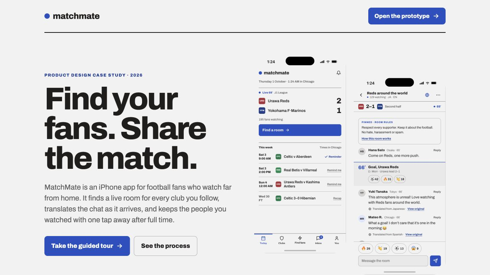

01 · PRODUCT DESIGN
MatchMate
Find your fans. Share the match. A social matchday prototype for football fans watching far from home.
- Focus
- Product & interaction design
- Year
- 2026
- Format
- iPhone app prototype

Watching a match is easier than finding your people
Fans who follow a club with a small local following can struggle to find people to watch with. Different languages, time zones, and leagues make that connection harder for international students, expats, and supporters living abroad.
MatchMate builds on an earlier Spring 2026 UX-course concept whose interviews identified isolation among fans watching less mainstream leagues abroad. The current project redesigns the app’s information architecture and flows around shared live viewing.
From kickoff to a continuing connection
- Find your matchToday prioritizes followed clubs, live scores, local kickoff times, and reminders.
- Choose your roomCompare languages, watchers, and chat speed before joining, or let Match me pick.
- Join the conversationRead translated messages, reveal the original text, and react to the room or individual goals.
- Stay connected after full timeExplore the recap and follow the people you watched with.
Make a lively room feel understandable and safe
The documented process compares visual directions, simplifies the Today screen, and refines the app’s accent color, controls, and surfaces. A review against Nielsen’s ten usability heuristics identifies issues with severity ratings and proposed fixes.
The resulting prototype includes spoiler-safe entry for delayed streams, message delivery states with retry, draft preservation during reconnection, and undo or confirmation for actions such as leaving and blocking. These features make the consequences of an action clearer during a fast-moving match.
Explore the prototype and process
The prototype covers ten flows around one simulated live match, with a guided tour, light and dark themes, and chat in English, Japanese, Spanish, and Korean. It uses demo data and placeholder club marks.
The full case study includes the alternatives and heuristic review behind the current design. This is a prototype demonstration; it does not establish a launched service or measured user outcomes.